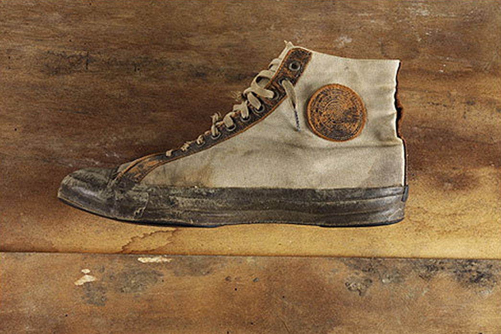

Historia de Converse
EL ORIGEN DE LA MÍTICA MARCA CONVERSE
En Malden, Massachussets, Marquis Mills Converse cimentó el nacimiento de la compañía que iba a cambiar por completo el devenir de la industria deportiva. Bautizada inicialmente como "Converse Rubber Shoe Company", la firma estaba especializada en la producción de sandalias con su característica suela de goma, un producto del que conseguía obtener una gran rentabilidad, pero no la suficiente como para alcanzar el escalón en el que Marquis Mills quería situar a su empresa.
Mills observó como la industria del rendimiento se encontraba envuelta en un crecimiento sin precedentes. Y ninguna otra marca le estaba dando la importancia que se merecía. Una situación que Converse aprovechó para girar su estrategia en torno a las bondades que podía aportar a la industria deportiva. Y, con esta idea, creó el zapato perfecto para la práctica deportiva. Bautizada como No Skid, haciendo referencia a la tracción que conseguía proporcionar, Mills consiguió una silueta de baloncesto capaz de hacer sentir a los jugadores como ninguna otra silueta lo había conseguido hasta entonces.

El baloncesto, en ese momento un deporte minoritario, comenzaba a crecer hasta igualarse al fútbol o al tenis, los dos principales deportes de EEUU en ese momento. Sin embargo, ninguna marca se había fijado en él con la suficiente atención como para proporcionar a sus deportistas el calzado adecuado que utilizar en una pista.
Converse All-Star y Chuck Taylor. La silueta que cambió el baloncesto
No fue hasta 1920 cuando la Converse No Skid se renombró a Converse All Star. Un nombre con el que la compañía americana jugaba a hacer creer a todos los jugadores de baloncesto que ésta era, con total seguridad, la silueta con la que todas las estrellas del baloncesto debían de jugar sus partidos. Y fue precisamente en ese año cuando Converse anunció el fichaje del empleado que iba a cambiar el devenir de la compañía. Chuck Taylor, un famoso fugador universitario de baloncesto y porterior miembro del Hall of Fame de 1969, se incorporaba a la plantilla de Converse, de manera poco más que fortuita. Con su carrera baloncestística ya terminaba, el jugador decidía ir a buscar trabajo a la central de la firma estadounidense, concretamente en Chicago. Y Converse no dudó un instante en materializar su fichaje por la compañía.
La firma americana se aprovechó de que el jugador había estado utilizando sus modelos durante los últimos años de su carrera, por lo que no le iba a resultar complicado destacar los puntos positivos de su silueta a la hora de tener que defenderlos antes los posibles interesados.
A partir de entonces, su trabajo consistía en cargar su coche de zapatillas Converse, una historia que guarda cierto paralelismo con la de Nike, y recorrer los Estados Unidos impartiendo clases de baloncesto a la par que vendía las zapatillas de la compañía que le tenía en nómina.
Y fue precisamente en este momento, el año que se produjo el cambió de nombre de No Skid en pro de Converse All Star, cuando comenzó a materializar sobre ella una serie de mejoras, como las plantillas de corcho o una especie de amortiguación en su parte trasera.
Cuando los años 20 comenzaban a tocar su fin, Converse ya había dejado de ser una compañía que trataba de hacerse un hueco en el ámbito del rendimiento para pasar a ser la marca preferida por todos los jugadores de baloncesto. Y fue en esa época cuando Converse ofreció un acuerdo sin precedentes en la industria deportiva. Como forma de agradecimiento, y ya que en ese momento el nombre de Converse se asociaba por completo al de Chuck Taylor, el modelo estrella de Converse adoptada el nombre de su mayor prescriptor y pasaba a llamarse Converse "Chuck Taylor" All Star.